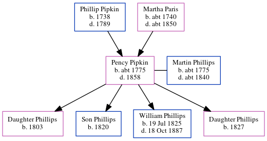

Pency Patrick Phillips (née Pipkin) c1775 - 1858
[ Home ] | [ Calendar ] | [ Surnames Index ] | [ Census Index ] | [ Family History ]The child of Phillip Pipkin and Martha Paris, Pency Pipkin, the 3 times great-grandmother of Michele Copp (née Phillips), was born in Wayne, North Carolina USA c. 17751 and had 4 children with Martin Phillips: daughter, Son, William Hiram and daughter.
She died in Wayne in 18581.
Parents
- Phillip Asher was born in 1738
- Martha was born c. 1740
Children
- daughter was born in 1803
- Son was born in 1820
- William Hiram was born on Jul 19, 1825
- daughter was born in 1827
Citations
- OneWorldTree Online publication - Provo, UT, USA: MyFamily.com, Inc.
Family Tree
Generated by ged2site. Last updated on Jun 6, 2024